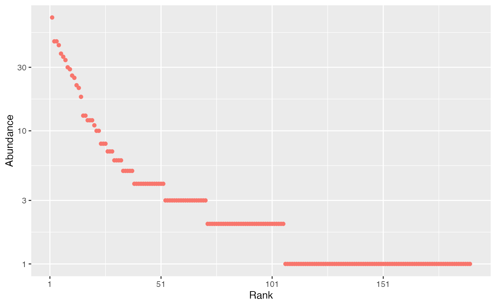
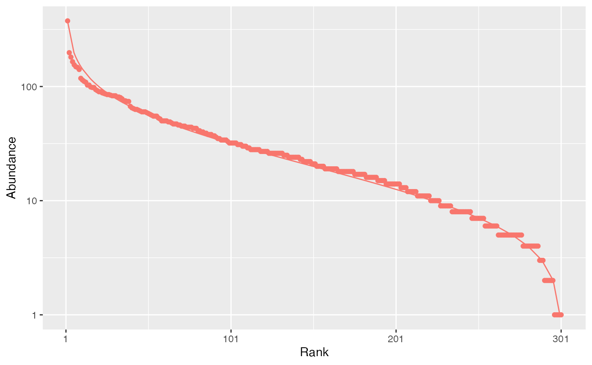
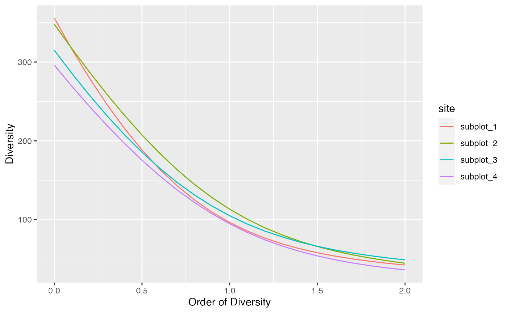

divent is a package for R designed to estimate diversity based on HCDT entropy or similarity-based entropy. It is a reboot of the entropart package, following the tidyverse manifest and easier to use. This is a short introduction to its use.
The package allows estimating biodiversity according to the framework based on HCDT entropy, the correction of its estimation-bias (Grassberger 1988; Chao and Shen 2003; Chao and Jost 2015) and its transformation into equivalent numbers of species (Hill 1973; Jost 2006; Marcon et al. 2014). Estimation of diversity at arbitrary levels of sampling, requiring interpolation or extrapolation (Chao et al. 2014) is available
Phylogenetic or functional diversity (Marcon and Hérault 2015) can be estimated, considering phyloentropy as the average species-neutral diversity over slices of a phylogenetic or functional tree (Pavoine and Bonsall 2009).
Similarity-based diversity (Leinster and Cobbold 2012) can be used to estimate (Marcon, Zhang, and Hérault 2014) functional diversity from a similarity or dissimilarity matrix between species without requiring building a dendrogram and thus preserving the topology of species (Pavoine, Ollier, and Dufour 2005; Podani and Schmera 2007).
The classical diversity estimators (Shannon and Simpson entropy) can be found in many R packages. Bias correction is rarely available except in the EntropyEstimation (Cao and Grabchak 2014) package which provides the Zhang and Grabchak’s estimators of entropy and diversity and their asymptotic variance (not included in entropart).
Community data is a numeric vector containing abundances of species (the number of individual of each species) or their probabilities (the proportion of individuals of each species, summing to 1).
Example data is provided in the dataset paracou_6_abd.
Let’s get the abundances of tree species in the 6.25-ha tropical forest
plot #6 from Paracou forest station in French Guiana. It is divided into
4 equally-sized subplots:
## # A tibble: 4 × 337
## site weight Abare…¹ Abare…² Amaio…³ Amano…⁴ Amano…⁵ Ambel…⁶ Amphi…⁷ Andir…⁸
## <chr> <dbl> <int> <int> <int> <int> <int> <int> <int> <int>
## 1 subplo… 1.56 2 2 1 1 1 1 3 1
## 2 subplo… 1.56 2 0 1 0 1 0 0 4
## 3 subplo… 1.56 2 2 0 0 0 0 0 2
## 4 subplo… 1.56 4 0 0 0 0 3 0 0
## # … with 327 more variables: Apeiba_glabra <int>, Aspidosperma_album <int>,
## # Aspidosperma_cruentum <int>, Aspidosperma_excelsum <int>,
## # Bocoa_prouacensis <int>, Brosimum_guianense <int>,
## # Brosimum_rubescens <int>, Brosimum_utile <int>, Carapa_surinamensis <int>,
## # Caryocar_glabrum <int>, Casearia_decandra <int>, Casearia_javitensis <int>,
## # Catostemma_fragrans <int>, Chaetocarpus_schomburgkianus <int>,
## # `Chaetocarpus_sp.1-CAY` <int>, Chaunochiton_kappleri <int>, …
abd_sum(paracou_6_abd)## # A tibble: 4 × 2
## site abundance
## <chr> <dbl>
## 1 subplot_1 942
## 2 subplot_2 872
## 3 subplot_3 929
## 4 subplot_4 798The data in paracou_6_abd is an object of class
abundances, i.e. a tibble with species as columns and sites
as rows. It can be manipulated as any dataframe and plotted as a
rank-abundance curve:
autoplot(paracou_6_abd[1, ])
The rcommunity function allows drawing random
communities, e.g. a log-normal one (Preston
1948):
rc <- rcommunity(1, size = 10000, distribution = "lnorm")
autoplot(rc, fit_rac = TRUE, distribution="lnorm")
The Whittaker plot (rank-abundance curve) of a random log-normal distribution of 10000 individuals simulated with default parameter (\(\sigma = 1\)) is produced.
The classical indices of diversity are richness (the number of species), Shannon’s and Simpson’s entropies:
div_richness(paracou_6_abd)## # A tibble: 4 × 4
## site estimator order diversity
## <chr> <chr> <dbl> <dbl>
## 1 subplot_1 Jackknife 3 0 355
## 2 subplot_2 Jackknife 2 0 348
## 3 subplot_3 Jackknife 2 0 315
## 4 subplot_4 Jackknife 2 0 296
ent_shannon(paracou_6_abd)## # A tibble: 4 × 4
## site estimator order entropy
## <chr> <chr> <dbl> <dbl>
## 1 subplot_1 UnveilJ 1 4.57
## 2 subplot_2 UnveilJ 1 4.73
## 3 subplot_3 UnveilJ 1 4.65
## 4 subplot_4 UnveilJ 1 4.55
ent_simpson(paracou_6_abd)## # A tibble: 4 × 4
## site estimator order entropy
## <chr> <chr> <dbl> <dbl>
## 1 subplot_1 UnveilJ 2 0.976
## 2 subplot_2 UnveilJ 2 0.978
## 3 subplot_3 UnveilJ 2 0.980
## 4 subplot_4 UnveilJ 2 0.972When applied to probabilities (created with
as_probaVector in the following example), no
estimation-bias correction is applied: this means that indices are just
calculated by applying their definition function to the probabilities
(that is the naive, or plugin estimator).
##
## Attaching package: 'dplyr'## The following objects are masked from 'package:stats':
##
## filter, lag## The following objects are masked from 'package:base':
##
## intersect, setdiff, setequal, union
paracou_6_abd %>%
as_probabilities() %>%
ent_shannon()## # A tibble: 4 × 4
## site estimator order entropy
## <chr> <chr> <dbl> <dbl>
## 1 subplot_1 naive 1 4.34
## 2 subplot_2 naive 1 4.48
## 3 subplot_3 naive 1 4.45
## 4 subplot_4 naive 1 4.32When abundances are available, many estimators can be used (Marcon 2015) to address unobserved species and the non-linearity of the indices:
ent_shannon(paracou_6_abd)## # A tibble: 4 × 4
## site estimator order entropy
## <chr> <chr> <dbl> <dbl>
## 1 subplot_1 UnveilJ 1 4.57
## 2 subplot_2 UnveilJ 1 4.73
## 3 subplot_3 UnveilJ 1 4.65
## 4 subplot_4 UnveilJ 1 4.55
ent_shannon(paracou_6_abd, estimator = "ChaoJost")## # A tibble: 4 × 4
## site estimator order entropy
## <chr> <chr> <dbl> <dbl>
## 1 subplot_1 ChaoJost 1 4.51
## 2 subplot_2 ChaoJost 1 4.68
## 3 subplot_3 ChaoJost 1 4.62
## 4 subplot_4 ChaoJost 1 4.50The best available estimator is chosen by default: its name is returned.
Those indices are special cases of the Tsallis entropy (1988) or order \(q\) (respectively \(q=0,1,2\) for richness, Shannon, Simpson):
ent_tsallis(paracou_6_abd, q = 1)## # A tibble: 4 × 4
## site estimator order entropy
## <chr> <chr> <dbl> <dbl>
## 1 subplot_1 UnveilJ 1 4.57
## 2 subplot_2 UnveilJ 1 4.73
## 3 subplot_3 UnveilJ 1 4.65
## 4 subplot_4 UnveilJ 1 4.55Entropy should be converted to its effective number of species, i.e. the number of species with equal probabilities that would yield the observed entropy, called Hill (1973) numbers or simply diversity (Jost 2006).
div_hill(paracou_6_abd, q = 1)## # A tibble: 4 × 4
## site estimator order diversity
## <chr> <chr> <dbl> <dbl>
## 1 subplot_1 UnveilJ 1 96.3
## 2 subplot_2 UnveilJ 1 113.
## 3 subplot_3 UnveilJ 1 105.
## 4 subplot_4 UnveilJ 1 94.6Diversity is the deformed exponential of order \(q\) of entropy, and entropy is the deformed logarithm of of order \(q\) of diversity:
(d2 <- div_hill(paracou_6_abd, q = 2)$diversity)## [1] 42.28417 44.58777 48.83999 36.01687
ln_q(d2, q = 2)## [1] 0.9763505 0.9775723 0.9795250 0.9722352
(e2 <-ent_tsallis(paracou_6_abd, q = 2)$entropy)## [1] 0.9763505 0.9775723 0.9795250 0.9722352
exp_q(e2, q = 2)## [1] 42.28417 44.58777 48.83999 36.01687Diversity can be plotted against its order to provide a diversity profile. Order 0 corresponds to richness, 1 to Shannon’s and 2 to Simpson’s diversities:
div_profile(paracou_6_abd) %>% autoplot